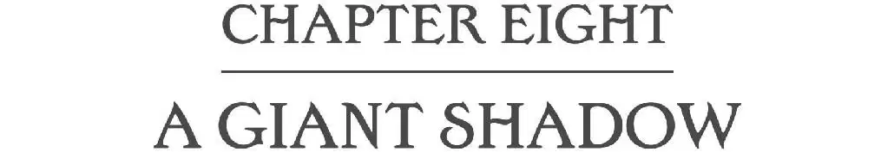
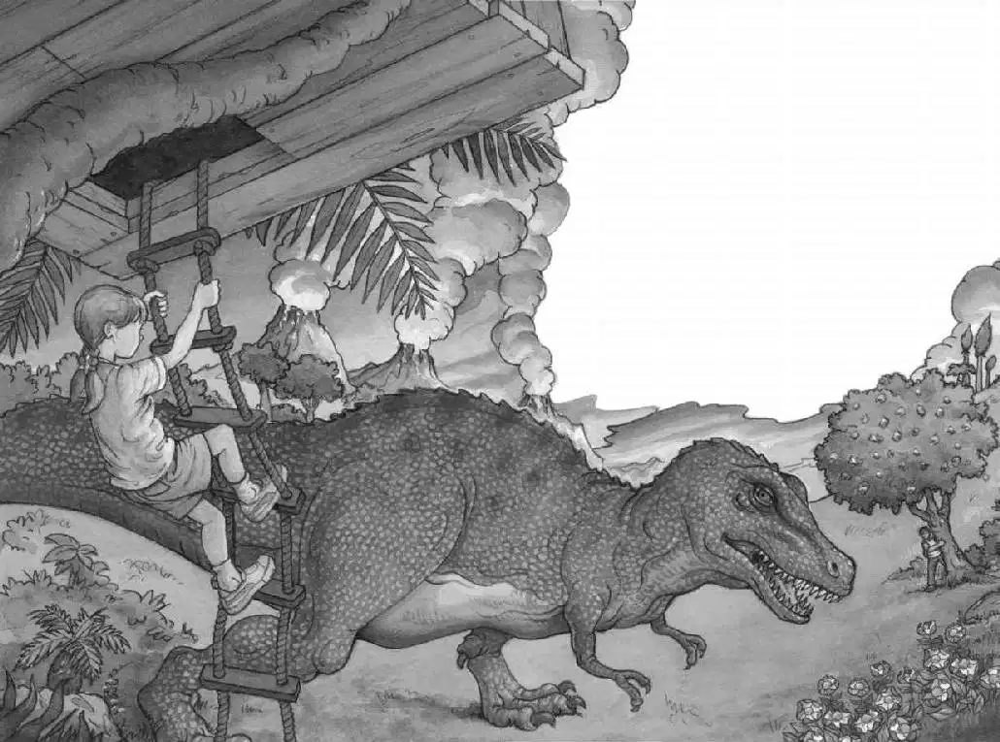
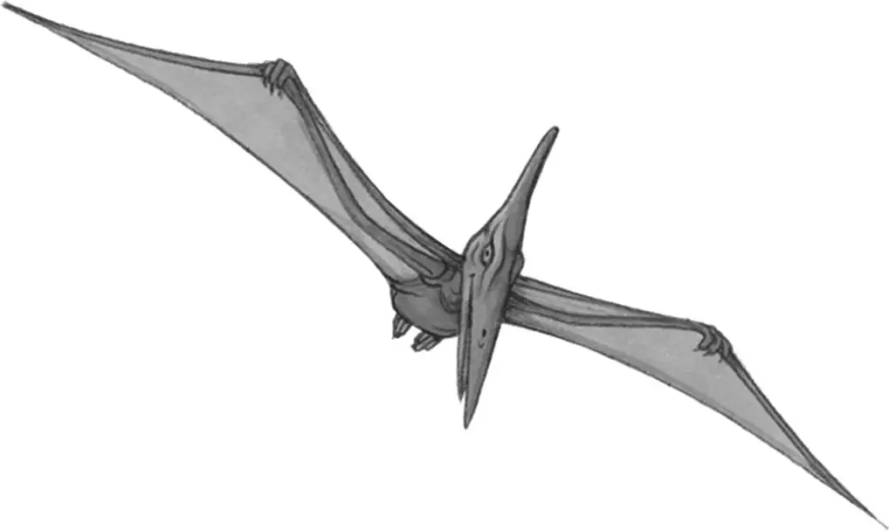

Jack jumped behind the magnolia tree.
His heart was beating so fast he could hardly think.
He peeked out at the giant monster. The horrible-looking creature was opening and closing its huge jaws. Its teeth were as big as steak knives.
Don’t panic, thought Jack. Think.
He peered down at the valley.
Good. The duck-billed dinosaurs were sticking close to their nests.
Jack looked back at the Tyrannosaurus.
Good. The monster still didn’t seem to know he was there.
Don’t panic. Think. Think. Maybe there’s information in the book.
Jack opened the dinosaur book. He found Tyrannosaurus rex. He read:
Tyrannosaurus rex was one of the largest meat-eating land animals of all time. If it were alive today, it could eat a human in one bite.
Great, thought Jack. The book was no help at all.
Jack tried to think clearly. He couldn’t hide on the other side of the hill. The Anatosauruses might stampede.
He couldn’t run to the tree house. The Tyrannosaurus might run faster.
Maybe he should just wait for the monster to leave.
Jack peeked around the tree.
The Tyrannosaurus had wandered closer to the hill.
Something caught Jack’s eye. Annie was coming down the rope ladder!

Is she nuts? What is she doing? Jack wondered.
Jack watched Annie hop off the ladder.
Annie hurried over to the Pteranodon. She was talking to him. She was flapping her arms. She pointed at Jack, at the sky, at the tree house.
She is nuts! Jack thought.
“Go! Go back up in the tree!” Jack whispered. “Go!”
Jack heard a roar.
The Tyrannosaurus rex was looking in his direction.
Jack hit the ground.
The Tyrannosaurus rex was coming toward the hill.
Jack felt the ground shaking.
What should I do? Jack wondered. Should I run? Crawl back into Dinosaur Valley? Climb the magnolia tree?
Suddenly a giant shadow covered Jack. He looked up.
The Pteranodon was gliding overhead. The giant creature sailed toward the top of the hill.
He was heading toward Jack.
